地政学
アシガバートはイラン国境に近い山麓の首都です。中立外交、天然ガス輸出、中国、ロシア、イラン、カスピ海方面への回廊が、官庁街と空港、鉄道、道路に集まります。砂漠国家の接続点でもあります。水も要です。
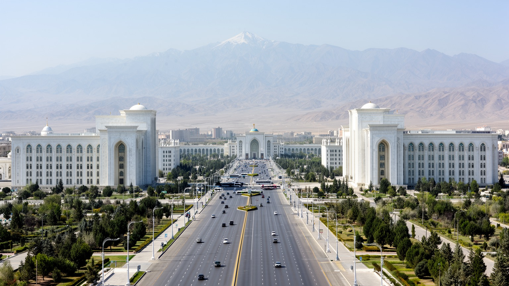
🇹🇲 トルクメニスタン / 首都アシガバート / World City Atlas
カラクム砂漠とコペトダグ山脈の間に置かれた、トルクメニスタンの首都です。白大理石の官庁街、天然ガス国家の行政、1948年地震後の再建、交通回廊、信仰と統制された日常が重なります。
砂漠の首都
アシガバートは、中央アジアの資源国家が首都を通じて自画像を作ってきた都市です。山麓の地形、砂漠の水、巨大建築、統制された公共空間、生活費と住宅の課題が一つの景観に現れます。
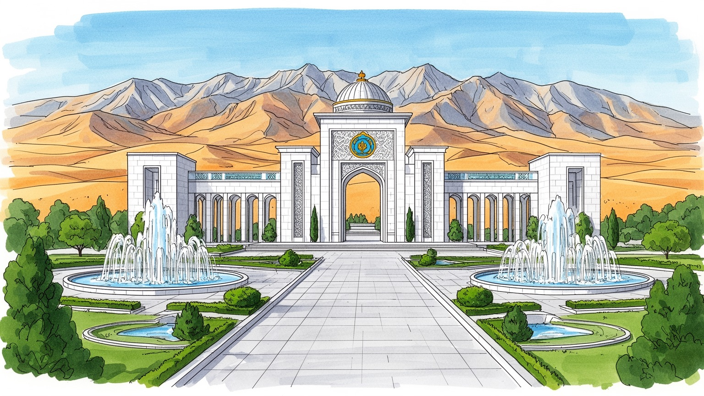
アシガバートはイラン国境に近い山麓の首都です。中立外交、天然ガス輸出、中国、ロシア、イラン、カスピ海方面への回廊が、官庁街と空港、鉄道、道路に集まります。砂漠国家の接続点でもあります。水も要です。
雇用は行政、国営企業、建設、繊維、交通、教育、サービス業に寄ります。ガス収入は都市建設を押し上げますが、物価、為替、雇用機会、移住、非公式な商いが家計を左右します。働き方の幅も課題です。若者にも響きます。
トルクメン文化、イスラム、ソ連期の記憶、ペルシア圏との近さ、遊牧の意匠が重なります。巨大な記念建築の背後に、家族行事、市場、祈り、絨毯、音楽が暮らしの時間を作ります。静かな信仰があります。家族が支えます。
住民は広い道路、暑い夏、住宅移転、公共交通、価格統制、親族ネットワークを使い分けます。旅人は白大理石の街路、博物館、バザール、トルクメン絨毯、ニサ遺跡へ向かいます。日常も都市を語ります。暑さも記憶です。
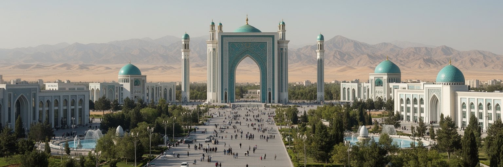
アシガバートは、カラクム砂漠の南縁とコペトダグ山脈の北麓に置かれた首都です。都市はイラン国境に近い扇状地の平地に広がり、乾いた空気、強い日差し、山からの冷気、限られた水が生活条件を決めます。大通りや記念建築の整然とした景観だけを見ると人工的な都市に見えますが、背後には砂漠と山麓の制約があります。カラクム運河や地下水、緑化、噴水、公園は都市の見た目を支える一方、水利用と維持管理の負担を大きくします。夏の暑さは通勤、歩行、公共交通、工事現場、屋外労働に影響し、日陰や停留所の質が暮らしを左右します。広い市域には官庁街、住宅地、工業地区、空港、郊外の新開発が含まれ、中心部の演出的な秩序と周辺の生活空間には違いがあります。アシガバートの地形を意識すると、首都の壮大さは、砂漠の中で国家が水、道路、建物、緑をどう配置してきたかという都市計画の問題として見えてきます。白い建築の背後で、乾燥地の脆さと維持の重さが都市の日常を作っています。山麓の都市であることは、地震リスクとも切り離せません。美しい軸線の街路も、気候、水、地盤への配慮があって初めて長く使われます。さらに、砂漠から吹く砂ぼこりや急な気温差は、建物の維持、道路清掃、植栽管理にも影響し、首都の日々の費用を押し上げます。その負担も都市の個性です。
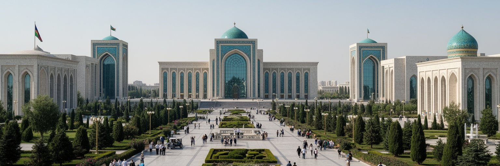
アシガバートは、天然ガスを軸にしたトルクメニスタン国家を運営する政治都市です。大統領府、政府機関、議会、国営企業、外交施設、記念広場が集まり、資源収入、輸出契約、インフラ投資、社会政策、治安、文化政策が首都で組み立てられます。トルクメニスタンは永世中立を掲げ、中国、ロシア、イラン、トルコ、中央アジア諸国との距離を調整しながら、ガスパイプラインと交通回廊を外交の重要な道具にしています。首都の巨大な建築や広場は、国の安定と独自性を可視化する装置でもありますが、政治参加や報道の自由、人権、移動の制約をめぐる問題も同時に存在します。住民にとって政治は、公共住宅、価格、雇用、旅券、教育、医療、インターネット利用、移動許可のような具体的な手続きとして現れます。アシガバートを政治の街として読むには、白大理石の象徴性だけでなく、資源国家が収入をどこへ配分し、誰に都市の利益が届くのかを見る必要があります。国家の豊かさが大通りに表れる一方、生活の選択肢や情報へのアクセスが限られれば、都市の成熟は不十分です。首都は権力を飾る場所であると同時に、制度が市民にどう触れるかを測る場所です。資源外交の成功も、日常の安心に変わる時に初めて住民の実感になります。外交行事や国際会議の華やかさも、教育、医療、住宅、交通の改善へつながる時に、首都の価値として住民に届きます。
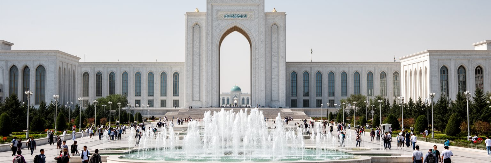
アシガバートのもっとも強い視覚的特徴は、白大理石で覆われた官庁、集合住宅、文化施設、記念建築が大通りに並ぶ都市景観です。独立後の政権は、首都を国家の成功と秩序を示す舞台として整え、広い道路、対称的な軸線、噴水、黄金色の装飾、巨大なモニュメントを積み重ねました。この景観は訪問者に強い印象を与え、世界でも特異な首都として語られます。しかし、都市計画を演出としてだけ見ると、住宅移転、旧市街の消失、歩行者の少なさ、公共空間の監視、維持費、気候との相性を見落とします。白い石材は日射を反射し、写真では明るく見えますが、暑い季節に広い道路を歩く負担は大きいです。大規模な再開発は新しい住宅とインフラを作る一方、以前の近隣関係や小さな商いを壊すこともあります。アシガバートの都市美は、整然とした外観と暮らしの使いやすさの関係を問います。国家が作る景観は、住民が日々使う道、店、学校、停留所、日陰、公園として機能してこそ都市になります。白大理石の首都を読むことは、建築の豪華さではなく、誰がその空間を自由に歩き、働き、休めるのかを確かめることです。見た目の統一感の背後には、都市の記憶をどう残すかという難しい問題もあります。夜間照明や噴水の演出も、維持する電力、水、清掃、警備の仕事を伴い、都市景観は日々の労働の上に成り立っています。
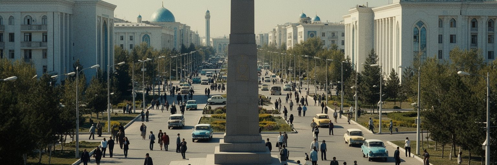
アシガバートの近代史を語るうえで、1948年の大地震は避けられません。都市は壊滅的な被害を受け、多くの住民が亡くなり、戦後のソ連都市として再建されました。今日の整然とした大通りや記念空間の背後には、災害によって失われた家族、地区、建物、生活の記憶があります。地震後の再建は、住宅、行政施設、学校、病院、交通網を作り直す作業であり、同時に古い街路や多民族的な都市の姿を大きく変える契機にもなりました。独立後の再開発はさらに景観を更新し、ソ連期の建物や近隣の記憶も一部で薄くなりました。災害の記憶は、記念碑や追悼行事だけでなく、建築基準、避難計画、病院、道路幅、公共情報のあり方にも関わります。コペトダグ山麓に近い都市である以上、地震リスクは過去の話ではありません。巨大建築や広場が国の威信を示すなら、その下にある耐震性、緊急対応、住民への情報提供も同じほど重要です。アシガバートの再建の歴史は、都市が美しく作り直される時、何が記憶され、何が消えていくのかを考えさせます。失われた都市への敬意は、新しい建物を並べることだけではなく、住民が安全に暮らせる制度を整えることでも示されます。災害の経験は、都市を飾る前に守る視点を与えます。家族の記憶として語られる地震は、公式の記念日だけではなく、住まいを選ぶ感覚や建物への信頼にも影響し続けています。
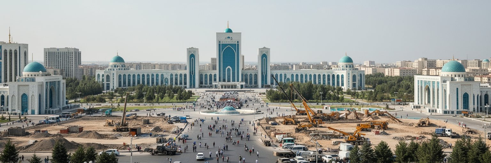
アシガバートの労働市場は、行政、国営企業、建設、繊維、教育、医療、交通、警備、小売、飲食、清掃、修理、非公式な商いに支えられています。国内の天然ガス収入は首都の建設投資や公共部門を押し上げますが、実際の雇用は多くの場合、国家機関や関連企業に近い場所で生まれます。新しい道路や建物は工事現場、資材、運転、警備、維持管理の仕事を作りますが、景気や予算に左右されやすいです。繊維や食品加工、交通関連の仕事もありますが、民間部門の幅は限定的で、若者は安定した職を求めて公的部門、商業、海外就労、家族の支援の間で選択します。為替管理、輸入品価格、インフレ、賃金水準は家計を強く揺らします。都市の中心部が豊かに見えても、住民の生活実感は食料、住宅、交通、医療、通信、教育費によって決まります。アシガバートの産業を読む時、天然ガスという大きな数字だけでは足りません。富がどれだけ多様な技能、起業、女性の就労、若者の将来、地方から来た人の機会へ変わるかが重要です。首都の仕事が国の制度に近いほど、雇用の安定と自由な選択の間には緊張が生まれます。日々の小さな商いも、都市を動かす重要な労働です。見えにくいサービス労働を含めて初めて、首都経済の厚みが分かります。地方から来る学生や労働者にとって、首都は機会の場所であると同時に、住まいと人脈の負担が重い場所でもあります。
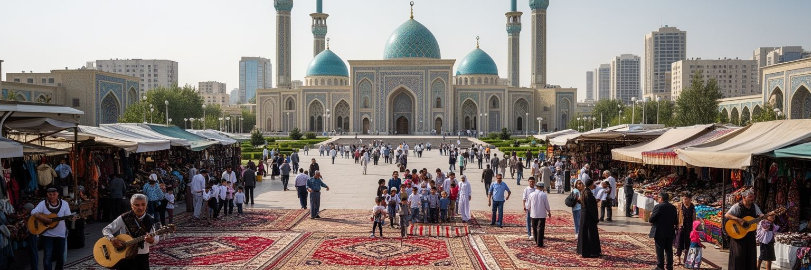
アシガバートの文化は、トルクメンの遊牧的な記憶、イスラム、ペルシア語圏との近さ、ロシア帝国とソ連の都市経験、独立後の国家文化政策が重なって作られています。モスクは礼拝、祝祭、家族行事、葬儀の場であり、信仰は公的な記念建築よりも静かな生活習慣として現れることが多いです。トルクメン絨毯、馬、詩人マフトゥムグル、伝統音楽、婚礼、民族衣装は、国の象徴として強く用いられますが、同時に家庭や市場の中で生きる文化でもあります。アシガバートにはロシア語を使う人々、少数民族、外交官、留学生、国外経験を持つ人もおり、文化は単一の表象に収まりません。巨大な博物館や記念施設は国家の物語を示しますが、住民の記憶は親族関係、近所、市場、学校、職場、移住経験の中で語られます。公共空間での表現が慎重に管理される都市では、文化の自由さは家庭、祝いの席、音楽、手仕事、食卓に残りやすいです。アシガバートを文化都市として読むには、華やかな国家的シンボルと、日常の小さな慣習を一緒に見る必要があります。絨毯の文様や祈りの時間は、砂漠の国が自分たちの歴史をどう記憶し、現代の首都でどう表すかを教えてくれます。文化は展示物ではなく、家族と街をつなぐ言葉です。市場で交わされる挨拶や婚礼の準備、食卓の作法にも、公式の記念碑だけでは見えない都市文化が息づいています。
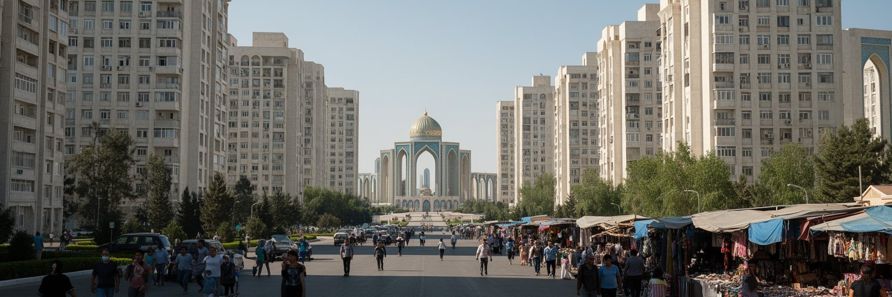
アシガバートの日常生活は、外から見える記念建築の整然さより複雑です。住民は広い道路、集合住宅、バザール、学校、病院、職場、親族宅、停留所を移動しながら暮らしています。独立後の大規模再開発では、古い住宅地が取り壊され、新しい集合住宅や官庁街が整備されました。これにより都市の見た目は大きく変わりましたが、移転、補償、近所づきあいの喪失、通勤距離、家賃、住宅の入手しやすさは住民にとって重要な問題です。暑い季節には徒歩移動が厳しく、日陰、バスの頻度、歩道の連続性、飲み水、公園の使いやすさが生活の質を左右します。価格統制や輸入品不足が起きると、家計は市場、配給、親族ネットワーク、貯蓄に頼ります。公共空間が監視されやすい都市では、人々は礼儀、沈黙、冗談、家庭内の会話を使い分けながら日常を保ちます。アシガバートの暮らしを読む時、街路に人が少ないことだけで都市を判断してはいけません。生活は建物の内側、市場のやり取り、親族の助け合い、通勤の時間、子どもの教育に濃く現れます。首都の成熟は、巨大な広場よりも、住民が暑い日にも無理なく歩き、働き、買い物をし、安心して家に帰れるかで測られます。都市の静けさの奥に、暮らしの工夫があります。家族で支える生活費や親戚への送金、結婚式や葬儀の出費も、表通りからは見えにくい都市経済を作っています。
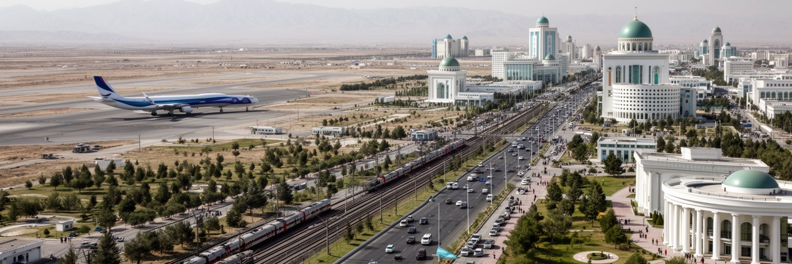
アシガバートは、中央アジア南部の交通回廊を考えるうえで重要な結節点です。空港、鉄道、幹線道路は、国内のマル、トルクメンバシ、ダショグズ、カスピ海方面と結び、南にはイラン国境、さらにペルシア湾方面への接続を意識させます。天然ガスの輸出路と同じように、人と物の移動も外交と経済の一部です。トルクメニスタンは国境管理が厳しく、観光や商用移動には手続きが多いですが、地理的には中国、中央アジア、イラン、カフカス、カスピ海を結ぶ可能性を持っています。首都の空港や駅は、国家が外へ開く窓であると同時に、管理の強さを感じさせる場所でもあります。市内では広い道路と車移動が目立ちますが、公共交通、徒歩、自転車の使いやすさは都市の公平性に関わります。砂漠の国では、長距離移動に燃料、水、整備、休憩施設、安全情報が欠かせません。アシガバートの交通を読むと、首都は単なる目的地ではなく、閉じた国境と開きたい回廊の間で揺れる都市だと分かります。移動の自由度は、観光、商業、留学、親族訪問、物流、救急にも影響します。道や空港の立派さだけでなく、誰がどこへ行けるのかが都市の世界性を決めます。交通は国家の姿勢を映す鏡でもあります。駅前や空港周辺の案内、タクシー、バスの分かりやすさは、国外から来る人だけでなく、地方から首都へ来る住民の安心も支えます。
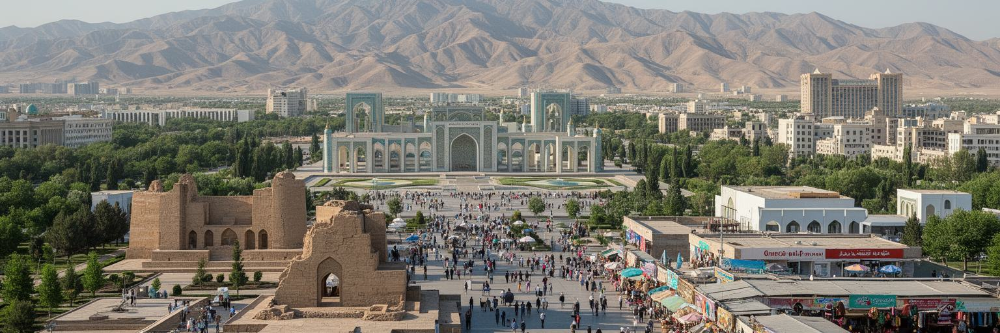
アシガバート観光は、白大理石の街路と記念建築だけでなく、近郊のニサ遺跡へ向かうことで深みを持ちます。ニサはパルティア王国と結び付く世界遺産で、中央アジア、イラン高原、シルクロードの歴史を感じさせる場所です。首都の博物館、トルクメン絨毯、独立記念施設、バザール、モスク、広場を歩いた後に山麓の遺跡を見ると、現代国家の演出と古代からの交通路が重なって見えます。ただし、アシガバートは自由に歩き回る観光都市というより、移動や撮影に注意が必要な首都です。旅行者はガイド、許可、交通、宿泊、現地の規則を理解し、住民の日常や信仰を尊重する必要があります。観光はホテル、運転手、ガイド、土産物、飲食に収入をもたらしますが、厳しい入国手続きと情報の少なさは訪問者数を限ります。だからこそ、一度訪れる旅は都市の表面だけでなく、砂漠、山麓、古代遺跡、ソ連期、独立後の首都建設を結んで読む価値があります。アシガバートの旅は、奇妙な白い都市を眺めるだけで終わらせると浅くなります。ニサへ続く道をたどることで、この場所が長く地域の交通と権力の交差点だったことが分かります。古代の土壁と現代の大通りは、同じ山麓で時間を重ねています。バザールで絨毯や食の文化に触れる時間を加えると、観光は建物見物から生活文化の理解へも近づきます。
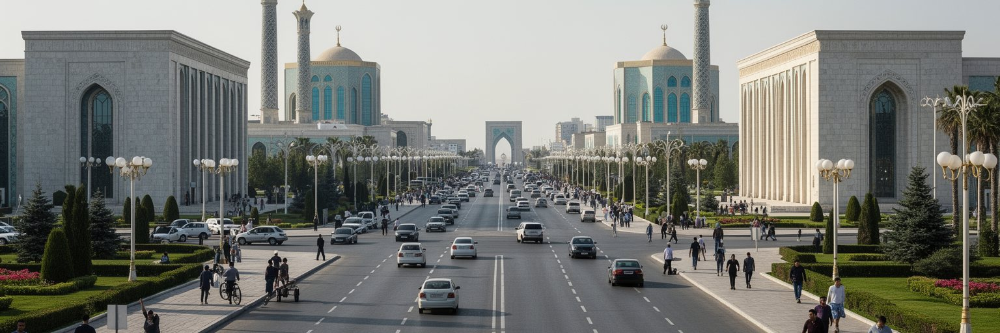
アシガバートの整然とした景観は、都市統制の強さとも結びついています。公共空間の使い方、撮影、集会、報道、インターネット、移動、住宅再開発をめぐる制約は、住民と訪問者の行動に影響します。街路が清潔で静かに見えることは、必ずしも自由で使いやすい公共空間を意味しません。社会問題は見えにくくなりやすく、物価、雇用、住宅、移転、医療、教育、移住、情報アクセス、女性や若者の選択肢は、公式の景観からは読み取りにくいです。国営部門への依存が大きい都市では、仕事や住宅、行政手続きが政治的な関係と近くなり、声を上げにくい雰囲気が生まれます。一方で、人々は親族、近所、市場、宗教、職場の助け合いを通じて生活を支えています。都市を外から見る時には、空っぽの広場や巨大建築を珍しがるだけでは不十分です。そこに暮らす人が何を話せるのか、どこへ移動できるのか、どの情報に触れられるのかを考える必要があります。アシガバートの社会的な重要性は、資源国家が都市をどれほど強く管理し、その中で住民がどのように日常を守るかにあります。統制された首都を読むことは、国家の力と生活の柔らかな工夫を同時に見ることです。静かな街路の奥に、見えにくい不安と支え合いがあります。訪問者にも、表面の奇抜さを消費するだけでなく、住民が置かれた制約を想像する姿勢が求められます。
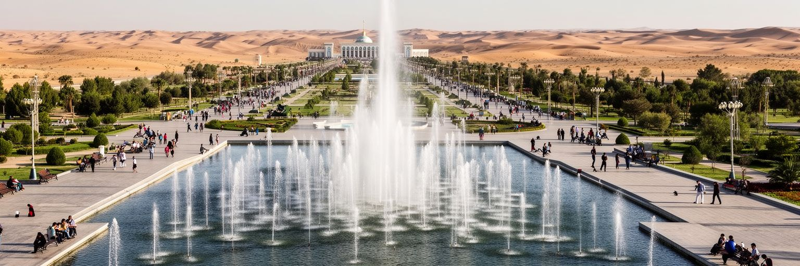
アシガバートの公園、街路樹、噴水、芝生は、砂漠の首都を印象づける重要な要素です。しかし、その緑は自然に豊かな環境から生まれたものではなく、水を引き、管理し、維持する大きな労力によって成り立っています。カラクム運河はトルクメニスタンの農業と都市生活に大きな役割を持ちますが、蒸発、漏水、塩害、水質、下流域への影響も抱えています。首都で水を大量に使う景観は、国家の豊かさを示す一方、乾燥地の持続可能性を問いかけます。気候変動で暑さや水不足が厳しくなれば、噴水や芝生の見せ方だけでなく、住宅の断熱、日陰、節水、排水、災害対応が都市の課題になります。緑地は美観だけでなく、熱を和らげ、歩行者の休憩場所になり、子どもや高齢者の外出を助ける公共資源です。だからこそ、中心部の見せる緑だけでなく、住宅地や周辺地区にも日陰と公園が必要です。アシガバートを環境都市として読むと、白い建築よりも水の循環が重要に見えてきます。砂漠の中で都市を維持することは、資源を見せることではなく、限られた水を公平に長く使うことです。緑の多さは豊かさの象徴である前に、乾燥地で暮らす知恵の試験でもあります。水の使い方が、首都の未来を決めます。節水型の植栽、漏水対策、再利用水の活用が進めば、見せる緑から暮らしを守る緑へ意味が変わります。
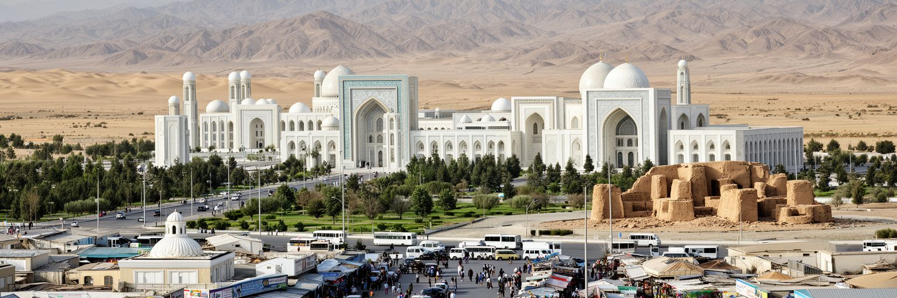
アシガバートは、世界の大都市のような金融規模や人口密度で評価する都市ではありません。それでも重要なのは、天然ガス国家の政治、中央アジアの地政学、砂漠の水、白大理石の国家演出、地震後の再建、都市統制、住宅移転、信仰、古代遺跡への記憶が、一つの首都に濃く重なっているからです。整然とした景観は強い印象を残しますが、都市の読み方はそこで止まりません。誰がその広場を使えるのか、どの情報が流れるのか、資源収入が生活へどう届くのか、水と緑をどれだけ持続できるのかを考えると、アシガバートは現代都市の難しい問いを示します。山麓の地震リスク、砂漠の暑さ、国境に近い地理、ニサ遺跡へ続く歴史は、首都を単なる奇観ではなく、長い地域史の中に置き直します。観光客にとっては不思議な白い都市かもしれませんが、住民にとっては働き、学び、祈り、家族を支える生活の場です。アシガバートを読むことは、国家が都市をどれほど強く設計できるかと、人々の日常がその設計の中でどのように続くかを見ることです。巨大な建築と静かな暮らしの間に、この都市の本当の輪郭があります。資源、統制、記憶、水、祈りを同時に見る時、首都の意味が立体的になります。都市の派手さを一度脇に置くと、中央アジアの変化、閉じた国境、砂漠の環境、家族の生活が同じ地図上に見えてきます。